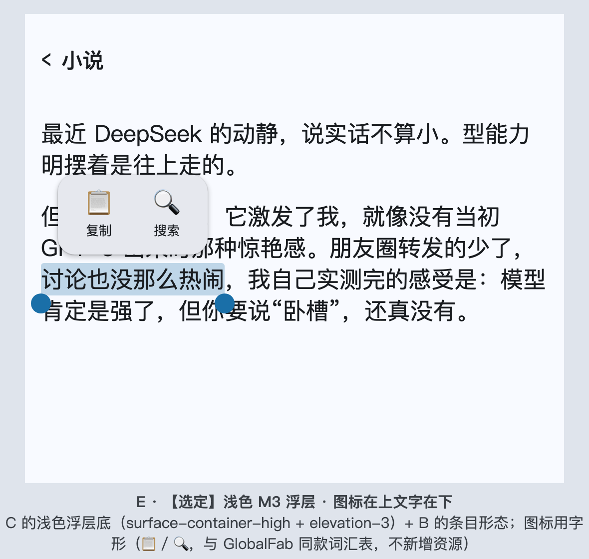
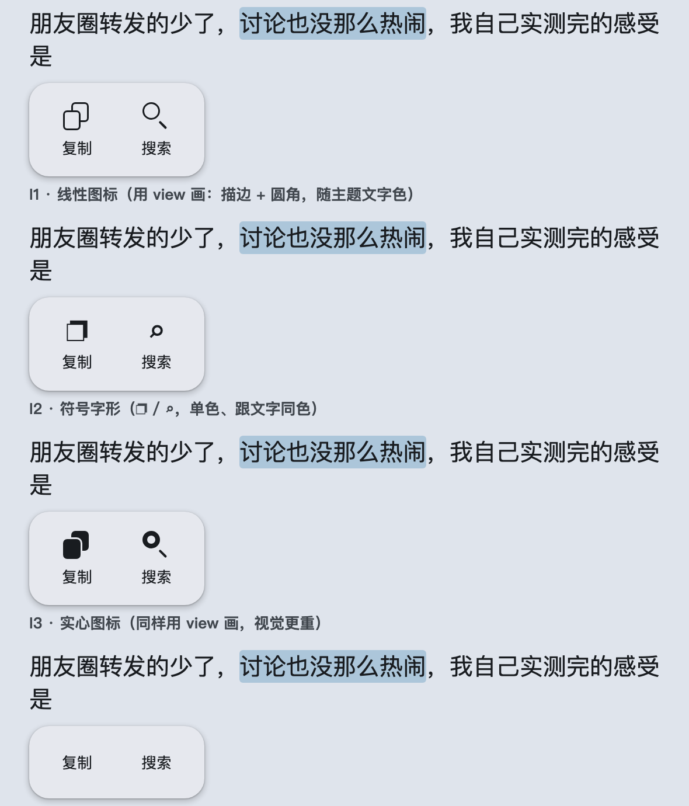
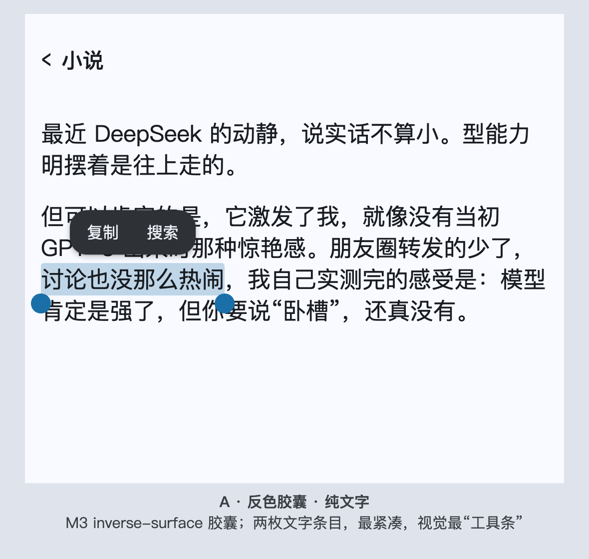
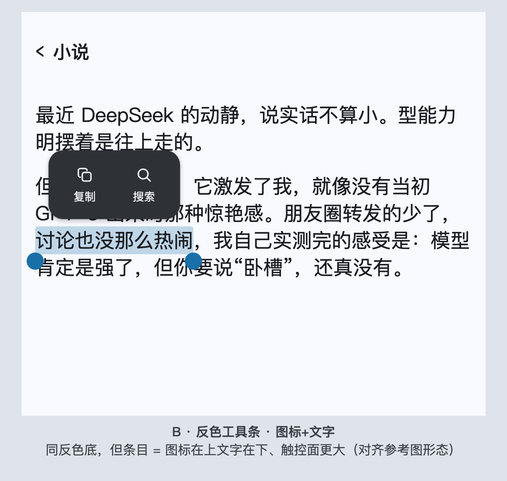
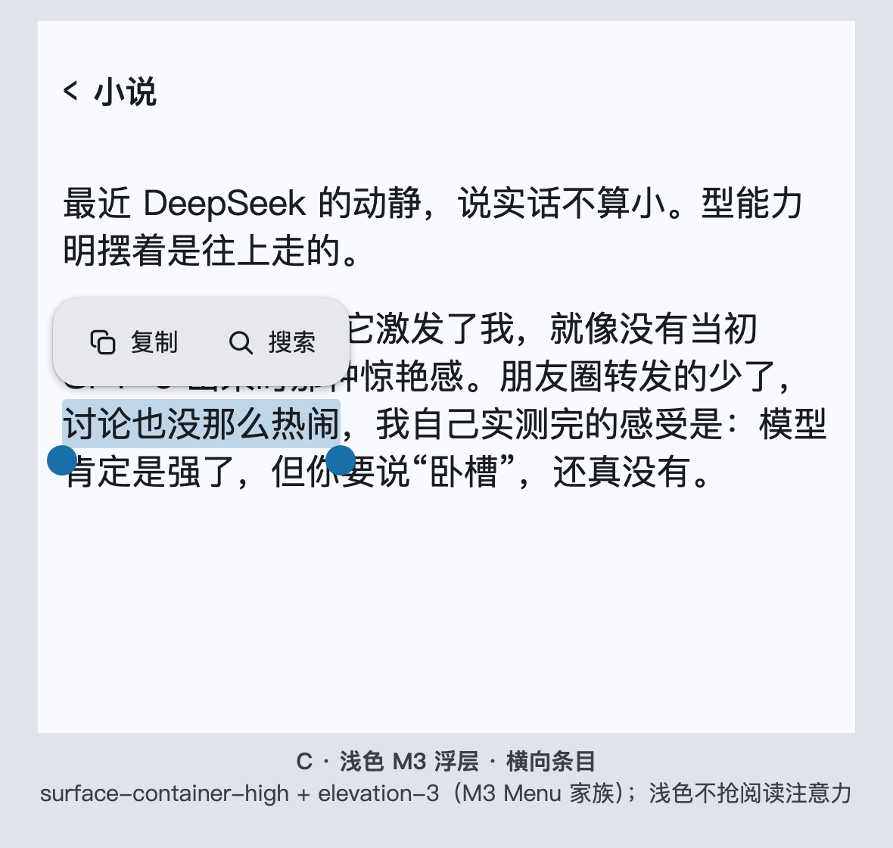
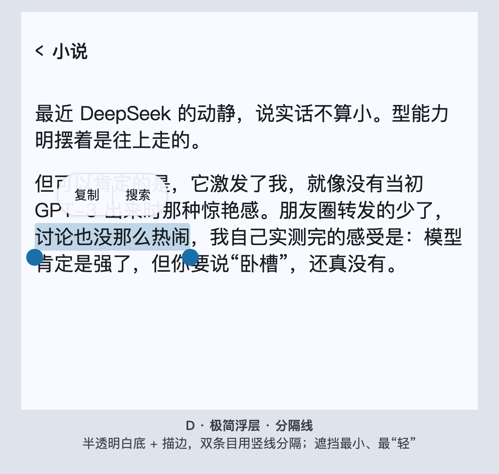

选中操作菜单 · 方案对比
E = 选定方案（浅色 M3 浮层 + 线性图标在上文字在下）；A–D 为候选存档；图标处理对比见 shots/icons.png。可交互原型：lynx-novel-text-selection-toolbar.html?variant=A|B|C|D|E

E · 【选定】浅色 M3 浮层 + 线性图标在上文字在下
surface-container-high + elevation-3；图标 = view 画的线性图标（复制两片叠纸 / 搜索描边圆+短棒），无字体・图片依赖

图标处理对比
I1 线性（选定）/ I2 字形（否决）/ I3 实心 / I4 无图标

A · 反色胶囊（纯文字）

B · 反色工具条（图标+文字）

C · 浅色 M3 浮层（横向条目）

D · 极简浮层（分隔线）